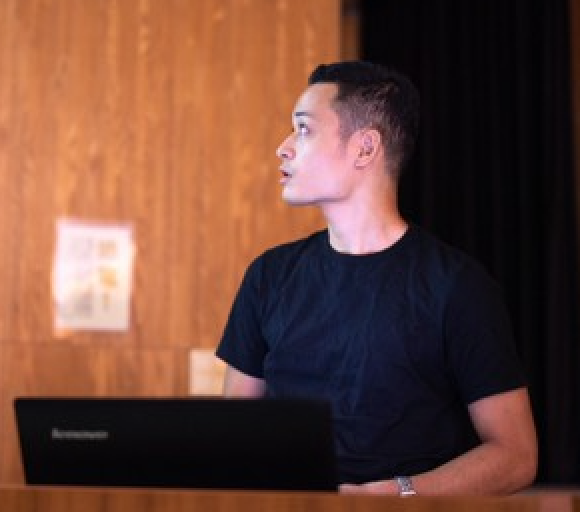

Kosei Ide

Software Developer at Tokyo.
Work Experience
- September 2022 -, DevOps Engineer, Self-employed
- May 2020 - Aug 2022, Software Developer, Da Vinci Studio, Inc.
- April 2019 - April 2020, Software Developer, Minnano Wedding Co., Ltd.
- March 2018, Software Developer Internship, Cookpad Inc.
- February 2018, Software Developer Internship, Minnano Wedding Co., Ltd.
- November 2018, Software Developer Internship, PERSOL PROCESS & TECHNOLOGY CO., LTD.
Education
- April 2015 - March 2019, University of the Ryukyus B.S.
- August 2016 - September 2016, Jeju National University, Republic of Korea
Certificates
Conference
Miscellany
-Blog/Github/Linkedin/kos31de[at]gmail.com
Last update: Dec 2022